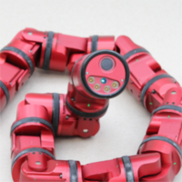
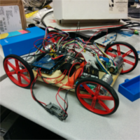
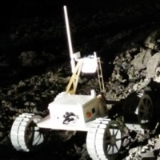
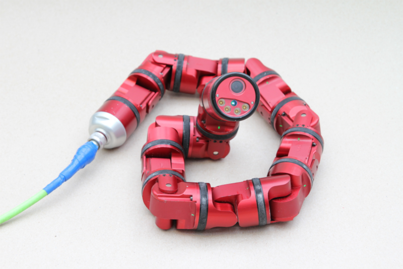
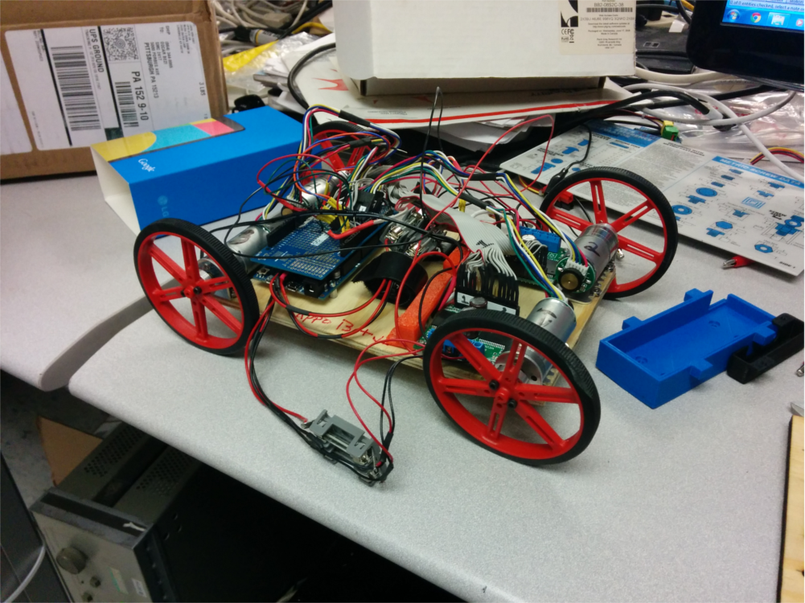
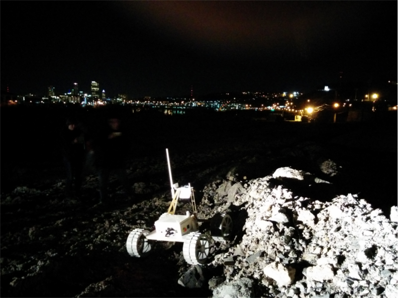

<!DOCTYPE html><html lang="en"><head><meta charset="utf-8"><meta name="description" content="The personal website of Oscar Bezi."><meta name="author" content="Oscar Bezi, oscar@bezi.io"><meta name="viewport" content="initial-scale=1,width=device-width"><meta name="mobile-web-app-capable" content="yes"><link href="assets/css/vendor.css" rel="stylesheet"><link rel="icon" sizes="196x196" href="assets/imgs/favicon.ico"><title>Oscar Bezi</title><link href="assets/css/index.css" rel="stylesheet"></head></html><body><div id="skrollr-body"></div><div data-0="background-position:0px 0px;" data-1000="background-position:0px -500px;" class="splash-background"></div><div class="splash-container"><div data-0="opacity: 1" data-600="opacity: 0" class="splash"><h1 class="splash-head">I'm Oscar.</h1><p class="splash-subhead">Rumor has it that I make stuff.</p><div class="pure-g lists"><div class="splash-subhead pure-u-lg-1-4 pure-u-md-1-2 pure-u-sm-1"><ul><li class="first">Things I am</li><li>roboticist</li><li>web developer</li><li>undergrad at CMU</li></ul></div><div class="splash-subhead pure-u-lg-1-4 pure-u-md-1-2 pure-u-sm-1"><ul><li class="first">Things I'm not</li><li>a designer</li><li>a nerd (I swear)</li><li>funny</li></ul></div></div><p class="splash-subhead">I'm weirdly obsessed with cats, hackathons, and boats.<br>More relevantly, I'm also fond of vim, C++, and Node.js.<br><br>You can check out what I've done here or on my <a href="https://github.com/bezi">GitHub</a>, or if you want you can read my <a href="docs/resume.pdf">résumé</a>.<br>If you have any questions you should <a href="mailto:oscar@bezi.io">email</a> me.</p></div><p hidden class="splash-subhead">My enemies have accused me of using emacs. I assure you, these slanderous attacks against me are baseless and irresponsible.</p><div data-0="opacity: 1" data-180="opacity: 0" class="scroll-indicator"><i class="fa fa-chevron-down faa-bounce animated"></i></div></div><div class="content-wrapper"><div id="robotics" class="content"><h2 class="content-head is-center">Robotics</h2><div id="robotics-contents" class="pure-g is-center"><div class="thumbnail"><a href="#robotics-seasnake-firmware" class="overlay"><p>SEASnake</p></a></div><div class="thumbnail"><a href="#robotics-cappobot" class="overlay"><p>CappoBot</p></a></div><div class="thumbnail"><a href="#robotics-andy" class="overlay"><p>Andy</p></a></div></div><hr><div id="robotics-seasnake-firmware" class="pure-g is-center"><div class="pure-u-1 pure-u-md-1-3 is-center"><h3 class="content-subhead">SEASnake Firmware Development </h3><p>During the summer between my freshman and sophomore years (in 2014), I continued my work during the semester in the CMU Biorobotics laboratory.  The SEASnake is the latest iteration of the modsnake program that has been ongoing in the lab, and I was tasked to work on the new firmware system.  There was an existing firmware platform, but my goal was to change it into a message-based system (for a better description of what that is, see <a href="docs/message-based-system.pdf">here</a>).</p><p>This allowed us to apply the existing firmware structure to other hardware systems in the lab, and thus have abstract libraries for things like motor control, PID, sensor feedback, and communications.</p><p><a href="#robotics">back to robotics↑</a></p></div><div class="pure-u-1 pure-u-md-1-3"><div class="img-container"></div></div></div><hr><div id="robotics-cappobot" class="pure-g is-center"><div class="pure-u-1 pure-u-md-1-3 is-center"><h3 class="content-subhead">CappoBot</h3><p>Named after its creator, Ellen Cappo, CappoBot (more formally known as Jumping Bot) was designed to use the moment of inertia from spinning its wheels to self-stabilize when thrown in the air.  I joined the project in the spring of 2014, and began by wiring and remaking the first prototype on a new board, learning how to solder and use a 3D printer.  After the hardware platform was built, I transitioned to a software role, working to combine the code that my teammates wrote to interface with the on-board sensors and motors into a single program.</p><p><a href="#robotics">back to robotics↑</a></p></div><div class="pure-u-1 pure-u-md-1-3"><div class="img-container"></div></div></div><hr><div id="robotics-andy" class="pure-g is-center"><div class="pure-u-1 pure-u-md-1-3 is-center"><h3 class="content-subhead">16-865: Advanced Mobile Robotics</h3><p>In the spring of 2014, I had the privilege of working under Dr. Red Whittaker on Carnegie Mellon's entry in the Google Lunar XPrize competition.  I worked in the Avionics and Software teams, first retrofitting the previous semester's rover prototype ("Andy") to be a full protoflight system, then helping with the design and implementation of the firmware and control system.</p><p>The control system used a Node.js server on a dedicated box.  The server had a serial connection to the radios, and from there to the rover.  Then, the operators connected to the Node.js server and used a browser interface to send various driving commands and see video and sensor feedback.  Advantages of this system include the ability for several different computers to connect to the server to see the feedback, and removing the necessity of making sure there are radio/comms drivers for every computer system that wishes to connect.</p><p><a href="#robotics">back to robotics↑</a></p></div><div class="pure-u-1 pure-u-md-1-3"><div class="img-container"></div></div></div></div><div id="hacking" class="content ribbon is-center"><h2 class="content-head content-head-ribbon">Hacking</h2><p>Here are the hackathons I've gone to.  Clicking the logos will take you to what I made at each hackathon.</p><a href="#webapps-cmueats"></a><a href="#webapps-globalizr"></a></div><div id="webapps" class="content"><h2 class="content-head is-center">Web Apps</h2><p>Under Construction!</p></div><div class="footer l-box is-center">&copy;Oscar Bezi 2013-2014.  </div></div><script type="text/javascript" src="assets/js/vendor.min.js"></script><script type="text/javascript" src="assets/js/index.js"></script></body>